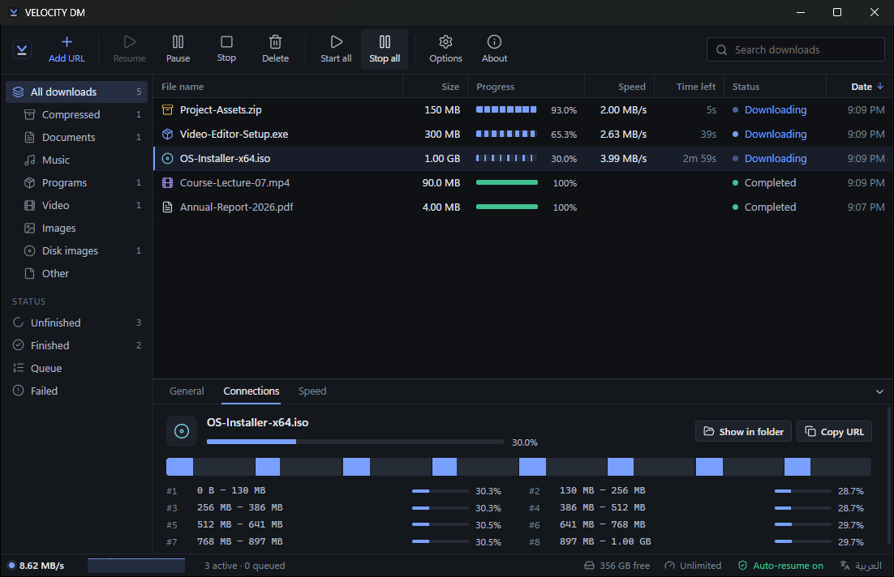

Watch every connection.
Each block is a slice of the file owned by one connection. When a slice finishes early, that connection steals half of the biggest one left — so nothing waits.
Illustration — not a real download.
VELOCITY DM
A fast, quiet download manager for Windows. It splits files across connections, survives crashes and restarts, and checks every byte before it calls a file done.
Free · Windows 10 and 11, 64-bit · English and العربية

Every feature exists to answer one question: will the download finish, and will it be right?
Each block is a slice of the file owned by one connection. When a slice finishes early, that connection steals half of the biggest one left — so nothing waits.
Illustration — not a real download.
Windows update at 3 AM? Power cut? VELOCITY DM starts with Windows and continues from its last checkpoint.
Sizes, ranges and server fingerprints are checked on every response, with optional SHA-256. A file you already have is never overwritten.
Pick the hours and days. Outside the window, downloads wait; when it opens, they start on their own.
The whole interface mirrors right-to-left. Switch any time, no restart.
Chrome and Edge
Choose “Download with VELOCITY DM” on any link, or let the extension catch downloads for you. You confirm every file in the app — and if the app can’t take a link, your browser simply keeps downloading it.
Install it from the app: Options → Browser. Cookies are sent only if you turn that on.
Plainly: no download manager can go faster than your internet connection or past a server’s limits. Multiple connections help when a server slows each connection down — which is common.
Free. About 5 MB. Updates itself.
That notice appears for new apps that Windows hasn’t seen many times yet. Click “More info”, then “Run anyway”. You can check the file against the SHA-256 checksums published with every release.